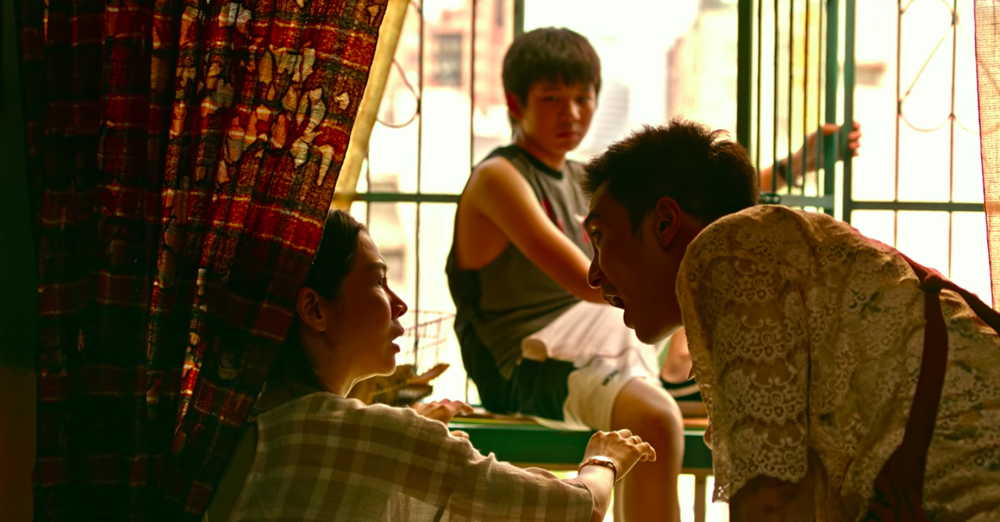
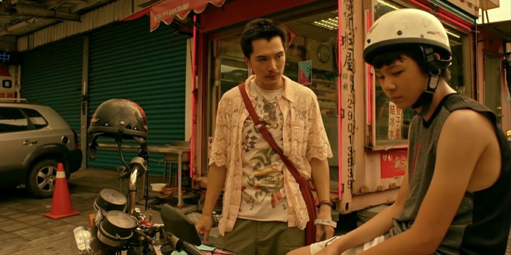

dear ex
Thể loại: tâm lý xã hội, đề cập đến vấn đề đồng tính.
Kịch bản phim éo le vl, một gia đình với người con trai 13 tuổi tưởng chừng viên mãn vđ thì một ngày bố nó thông báo đồng tính và theo trai. Không lâu sau thì ông này chết và để lại tiền bảo hiểm cho người tình (A Kiệt). Bà vợ (Tam Liên) tức điên lên và đến giày xéo ổng để đòi quyền thụ hưởng.

Toàn bộ câu chuyện được tái hiện theo cái nhìn của cậu con trai 13 tuổi (Tình Hy) dở dở ương ương chán ghét và bất lực trước sự ồn ào và bao bọc thái quá của mẹ mình. Cậu quyết định đến nhà người tình của bố ở để tìm hiểu xem điều gì khiến ông bỏ nhà, bỏ mẹ, bỏ cả cậu.
Cái xuất sắc mà mình cảm nhận thấy là nội tâm và tính cách cả 3 tuyến nhân vật được build sâu sắc vcl. Con người và tính cách cứ dần được bóc tách qua từng mối quan hệ. Dù k kịch tính, dồn dập cũng chẳng làm quá như nhiều phim LGBT, Dear Ex cứ bình bình mà xoáy vào tâm trạng của từng người.
Ai cũng có quyền mưu cầu hạnh phúc cho riêng mình, ai cũng có quyền được ích kỷ. Dear Ex không chỉ là câu chuyện về tình yêu, mà còn là câu chuyện về tình thân gia đình. Dù có mâu thuẫn thế nào, nhà vẫn là nơi chúng ta có thể dựa vào, đừng tiếc khi dành thời gian lắng nghe và thông cảm cho nhau.
Nội dung phim kiểu Tiểu Tam cướp chồng vô cùng trái ngang nhưng lại không hướng người xem đến sự thù ghét nào cả. Cả 3 nhân vật đều được đặt trong mối quan hệ khác nhau, lồng ghép từ hiện tại đến quá khứ để người xem hiểu được cảm xúc và cái lí của mỗi người.

Nhịp phim bình bình, nhẹ nhàng. Cá nhân mình thì thấy không quá sướt mướt cần khăn giấy đâu. Thật ra mình đã mất 2 lần để xem xong một bộ phim vì khoảng 30 phút đầu phim chỉ thấy cãi nhau ồn ào bực mình quá tắt mie đi. Nhưng càng về cuối càng hay, những nút thắt trong phim dần được mở ra và ổn hơn rất nhiều.
Cái mình thích thứ 2 sau diễn xuất là màu phim. Mình thì không có kiến thức nhiều về các kiểu màu này kia nhưng mình cá bạn nào thích màu kiểu HongKong, hơi hướng retro hoặc các bác đã xem Chungking Express mà thích màu của nó thì CHẮC CHẮN sẽ thích màu phim của Dear Ex luôn. Hự hự